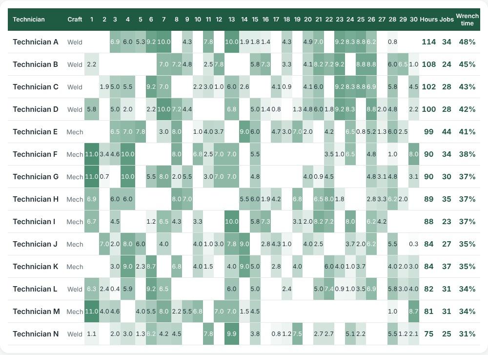
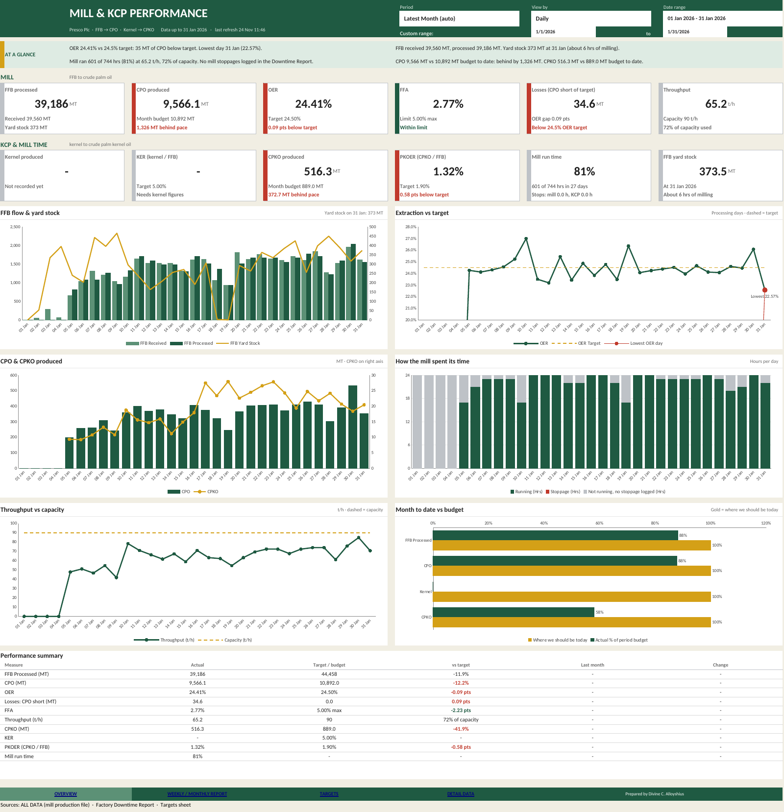
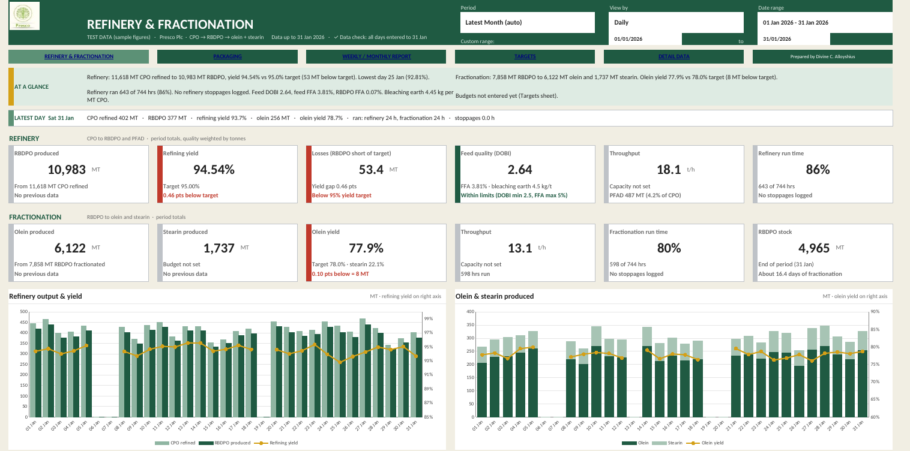
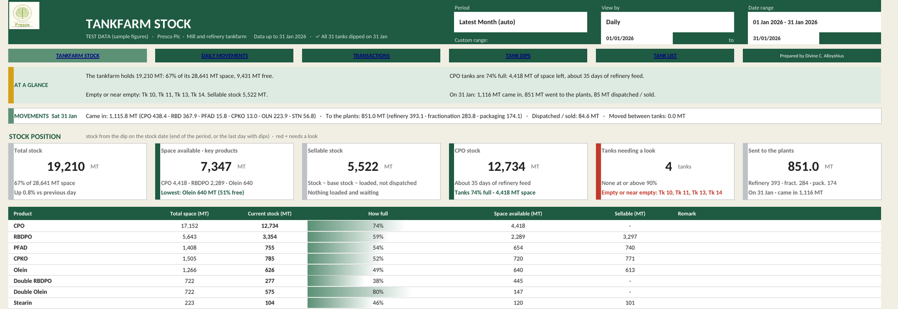

Featured work
Factory Data and Reporting System
Connected solutions, now in daily use, that give every section of the factory one way to record utility use, maintenance work, downtime and mill performance, and give management one view of where the factory loses time and output. Presented to management as Think on Data in November 2026.
 Reliability page, shown with test data.
Reliability page, shown with test data.
Maintenance & reliability
Maintenance Logs and Performance Dashboard
- Problem
- Job cards existed, but not every job was logged or followed through, so no one could say which machines failed most or how much work was planned versus firefighting.
- What I did
- Worked with the maintenance department to register every machine individually, then built seven section logs and one master equipment list feeding a three-page dashboard: reliability (MTBF, MTTR, availability), work and PM compliance, and equipment health.
- Business impact
- Shows where breakdowns come from, which critical machines need attention first, and whether preventive maintenance is working.

Utility & energy
Utility Dashboard
- Problem
- Power, steam, water and diesel figures sat as raw numbers in separate files, with no efficiency ratios and no record of equipment downtime.
- What I did
- Worked with the utility team to bring their separate records together into one page with 8 KPIs, 10 trend charts, a performance summary against targets and a weekly, monthly and quarterly report, with downtime fed from the factory downtime log.
- Business impact
- Utility use per ton of FFB is tracked daily, so waste and rising costs show up early.

Operations reporting
Factory Downtime Report
- Problem
- Stoppages were not recorded in one place, so no one could say how many hours each department lost, or why.
- What I did
- Agreed downtime categories with each department, then built one log per department, eight reason groups shared across the factory, a management summary and a department report, linked to maintenance job numbers and to the utility dashboard.
- Business impact
- Hours lost, main causes and trend for every department, with no manual compiling.

Month view with real data, names anonymised.
Maintenance & workforce
Wrench Time Tracking
- Problem
- No way to see how much of a technician's shift was actually spent on jobs without compiling job cards by hand.
- What I did
- Added month and technician views to the maintenance dashboard, fed live from the seven section logs, with hours counted per shift and overlapping job cards counted once.
- Business impact
- Managers see hours on the tools per technician per day, and the questions move to what fills the time between jobs.

January 2026 sample.
Production & extraction
Mill & KCP Performance Dashboard
- Problem
- Production was reported as totals, so no one could quickly see how far oil extraction was from target, what that gap meant in tonnes, or whether the month was on pace against budget.
- What I did
- Built one page from fruit to both oils: 12 KPI cards for the mill and kernel plant, six charts, a weekly and monthly report, and targets and budgets, linked to the production file and to the factory downtime report.
- Business impact
- Turned a 0.09-point OER gap into about 35 MT of CPO in one month, and shows throughput against capacity and budget pace every day.

Shown with test data (January 2026 sample).
Production, yield & quality
Refinery, Fractionation & Packaging Dashboard
- Problem
- Refinery, fractionation and packaging were reported separately, yield was only a percentage, and packaging was counted in units with no link to the olein made.
- What I did
- Rebuilt my first refinery dashboard into a fuller version: 18 KPI cards and 10 charts on two pages, quality trends, packaging in units and tonnes, stoppages linked from the downtime report, and a weekly and monthly report. Built, tested and ready for live data.
- Business impact
- Turns a 0.46-point yield gap into about 53 MT of RBDPO in one month, and follows the oil from CPO to finished packs.

Shown with test data (January 2026 sample).
Inventory & stock accounting
Tankfarm Stock & Daily Movements Dashboard
- Problem
- Stock was a list of tank levels: no view of the room left for key products, sellable stock was worked out by hand, movements were spread across several records, and some tanks were counted twice.
- What I did
- Rebuilt my first tankfarm dashboard into a stock account on two pages: 6 cards, a product table and tank charts, plus a daily movements page with a transaction log, a product filter and a log for tanks that change product. Built, tested and ready for live data.
- Business impact
- Shows space for CPO, RBDPO and olein with the tightest product named, sellable stock net of base stock and loaded trucks, and about 35 days of refinery feed in the CPO tanks.